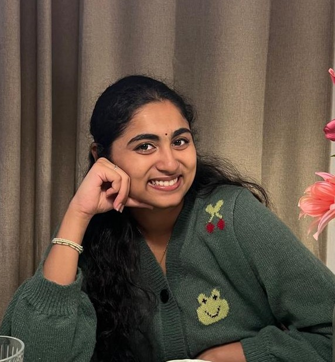

Crochet
It started out of project necessity and turned into my favourite way to switch off and make something with my hands.

hi! welcome to my project portfolio
Computer Science Student · Nice, France
I'm a Computer Science student from Mahindra University in Hyderabad, spending my final year at Centrale Méditerranée in Nice. I like following an idea all the way from "what do people actually need?" to something that works, and I've done that with full-stack web and mobile apps, machine learning projects and, lately, AI search with RAG. Organising university events and managing a small handicrafts venture taught me how much good work depends on a good team.
Looking for: a 5-month internship (stage) from April 2027 in product management or AI/technical product, and open to software engineering. French student visa holder; convention de stage provided by Centrale Méditerranée.
Intensive foundation courses and industry projects.
CGPA 9.29/10 (until 3rd year) · 2x Academic Scholarship · Final year: Study Abroad Program
A Levels 87.25% · AS 80% · IGCSE 93.14%
GenAI and LLMsDeep Neural NetworksMachine LearningArtificial IntelligenceApplied Time Series AnalysisModern CryptographySoftware EngineeringData Structures and AlgorithmsDesign and Analysis of AlgorithmsOperating SystemsDBMSOOPS
It started out of project necessity and turned into my favourite way to switch off and make something with my hands.
I'm a trained classical singer from a music-loving household. I've performed in bands and taken part in music competitions.
I read across genres. I like exploring stories and living different lives. Travel is high on my list too.
PythonNLPRAGQdrant
An industry project with LAM (Laboratoire d'Astrophysique de Marseille), where engineers and researchers need to find answers scattered across web pages, an issue tracker and data servers. We're building a retrieval-augmented (RAG) assistant that searches all of these in one place and answers with citations to its sources.
It is designed to say it doesn't know when the evidence isn't there, rather than guess, and to respect document access levels so people only see what they're allowed to.
React Native (Expo)TypeScriptSupabase
An app for groups who watch movies together. I designed the product and built it as a cross-platform iOS and Android app using React Native (Expo Router) with a Supabase backend, where groups can track what they've watched and what's next. I built it with AI-assisted coding, which let me focus on the product decisions and the user experience. Updates are delivered over the air through EAS.
View repositoryPythonPyTorchLoRASentence-Transformers
A coursework research project in a group. We asked whether fine-tuning a language model on bias data could change the model's own bias. We fine-tuned MiniLM with LoRA on StereoSet, then probed it on CrowS-Pairs to measure stereotype scores and on SST-2 to check that sentiment accuracy held up.
Result: the model over-corrected, changing its answers on about 40% of 1,508 test pairs, while sentiment accuracy stayed at 80.8%.
View repositoryMongoDBExpress.jsReactNode.js
A full-stack MERN app for parcel delivery. Customers can book a parcel service and follow their shipment live, and drivers can sign up and be managed on the platform. We tested it against realistic use cases. [Add which parts you built, e.g. booking flow, tracking, driver dashboard.]
View repositoryReact.jsNode.jsExpress.jsMongoDBFastAPIScikit-learnPyTorchAgile/Scrum
A platform where students book sessions with peer mentors and join live group sessions with others who have similar needs. Students also get a doubt-clarification portal with built-in chat, where student and faculty mentors can answer specific questions, and an incentive point system to encourage taking part.
We worked in Agile/Scrum sprints. I built the React frontend and the Node/Express layers on MongoDB. A recommender built with FastAPI, Scikit-learn and PyTorch suggests personalised learning pathways. We tested it against use cases.
View repositoryPythonSARIMASTL decompositionMachine learning
A system that forecasts electricity demand a day ahead, built on Open Power System Data. We split the data into trend and seasonality with STL decomposition, studied it with ACF/PACF, and forecast with SARIMA, measuring accuracy with MASE, RMSE and MAPE.
On top of the forecasts we added an anomaly detection pipeline that flags unusual load using residual z-scores plus a machine-learning classifier. It was tested with simulated live data and a monitoring dashboard. [Add your best error number, e.g. MAPE.]
View repositoryPythonExcelResearch
A group research project on how one assertive person can shape the decisions of a whole group. We looked at centrality and herding in societal debates, then extended it to marketing: how companies use herd behaviour to sell, from hype waves on social media to movie promotions and celebrity endorsements. We analysed case studies and behavioural data with Python and Excel, and mapped the networks in Gephi.
View repositoryHTMLCSSJavaScript
A client-side tool that tells you how strong a password is as you type, with real-time feedback. It looks at entropy, how the characters are distributed and common attack patterns, so the feedback goes beyond "add a symbol". It remembers its analysis state in the browser, so it survives resets.
View repositoryAs Programming Head, I led the programming side of ROOTS, a Mahindra Group level cultural festival at Mahindra University, funded by Mahindra and Mahindra. Working with Team Hyperlink and the Organising Committee, we came up with event ideas that would suit a student audience, put the line-up together and coordinated the artists.
With input from industry experts, we built the festival around one idea: helping students reconnect with the art forms of their roots.
As Logistics Head for La Fête de la Francophonie, I brought together a volunteer team and helped lead the logistics of this French-language event at Mahindra University. We ran regular planning meetings, and I acted as a link between student participants and mentors so everyone knew what was happening and when.
As Vice-Marketing Head, I worked with the Organising Committee to plan events and create promotional content that would get more students taking part. Together we promoted sustainable entrepreneurship and supported the teams entering with their training schedules.
Result: together with the committee, we selected the teams that went on to Hult Prize Global.
AURA was a handmade-products venture run by a team of ten at Mahindra University. As Founder, I took on most of the managing: keeping the work organised, coordinating who was doing what, and helping the team decide on pricing and how to sell. Together we designed and made the products and sold them online and at stalls.
Result: together we turned INR 5,000 of starting capital into INR 25,000 in sales (INR 20,000 profit), online and at stalls.
As Head Girl, I led the Student Cabinet as we organised the school's events across the year. We represented the school at inter-school competitions and Founders Day, and I tried to be a bridge between management and students so that both sides felt heard.
As General Secretary, I worked with the student cabinet on event logistics and planning, and helped carry out the disciplinary duties given to cabinet members. It was my first step into student leadership, and it led to my role as Head Girl.